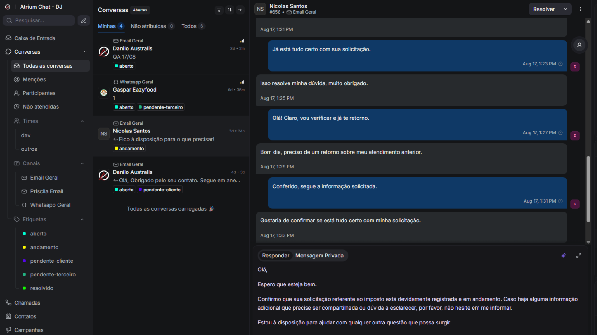
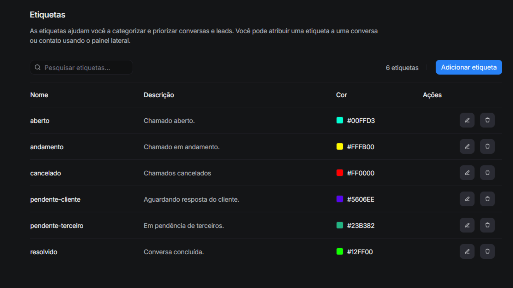
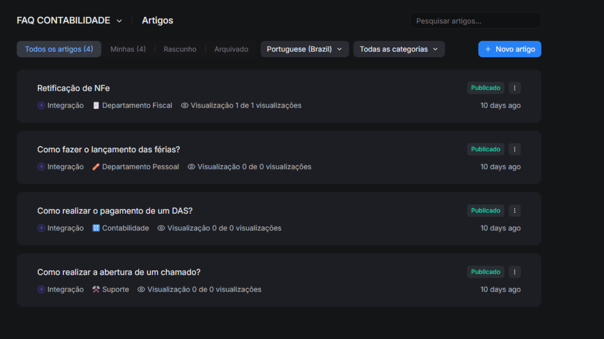
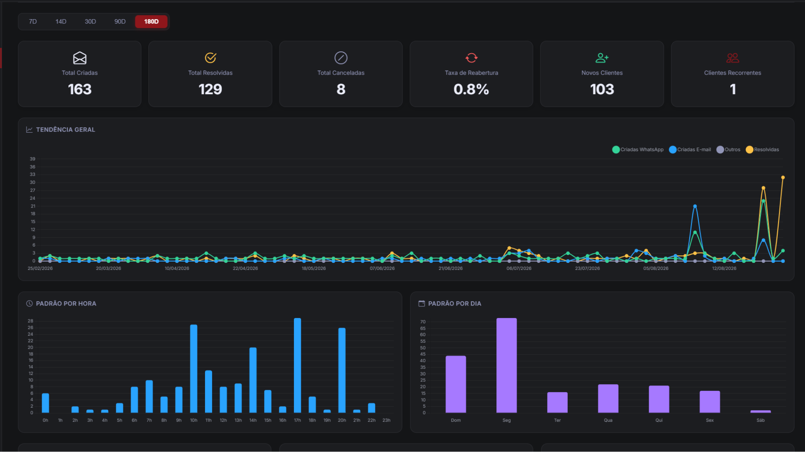
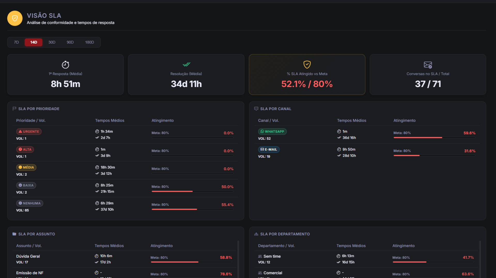
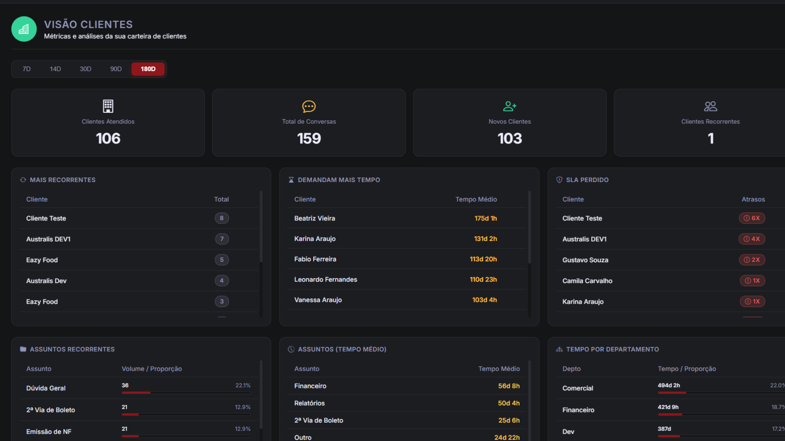
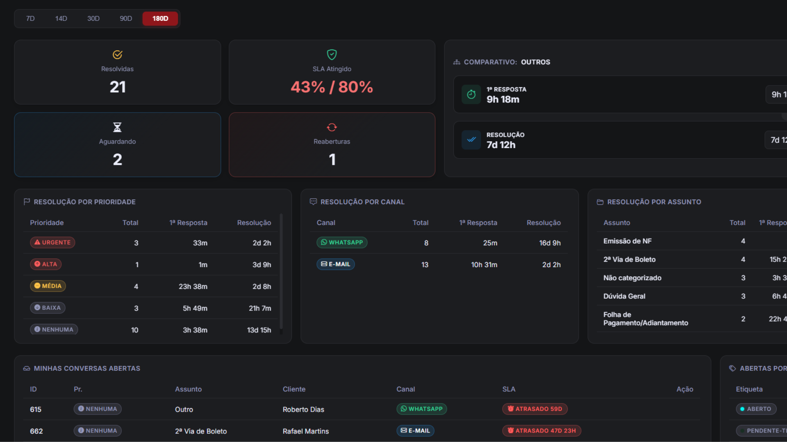

Mais controle
para o seu negócio.
O Atrium Desk Pro reúne o Atrium Chat e o Atrium Monitor em uma única solução, trazendo comunicação integrada, visibilidade em tempo real e métricas completas para você tomar decisões mais rápidas e assertivas.
-
Atendimento unificadoChat, e-mail e integrações no mesmo ambiente.
-
Monitoramento em tempo realAcompanhe métricas e saúde dos sistemas.
-
Decisões mais rápidasDados e indicadores em um só lugar.

Atrium Chat
Caixa de entrada omnichannel self-hosted com automações e IA para revolucionar a produtividade do seu time.
Omnichannel & Copiloto IA
Caixa unificada com e-mail, WhatsApp e redes sociais. IA que resume históricos e ajusta o tom das respostas.
Gestão Visual Kanban
Etiquetas personalizadas para status como pendente, em andamento ou aguardando cliente.
Central de Ajuda e FAQ
Portal de autoatendimento para clientes e base de conhecimento para a equipe interna.



Respostas rápidas
Templates e atalhos para acelerar o primeiro contato com o cliente.
Atribuição automática
Distribui conversas por regras de fila, time ou carga de trabalho.
IA multilíngue
Resume e traduz conversas automaticamente, mantendo o contexto.
Atrium Monitor
Não espere o cliente reclamar. Monitore tendências, SLAs e gargalos da sua operação em tempo real.
Visão geral e tendências
Volume de aberturas de chamados e horários de pico da operação.
Controle de SLA implacável
Metas de 1ª resposta e resolução, por prioridade, canal e departamento.
Inteligência de clientes
Veja quais clientes têm o SLA estourado com mais frequência.
Performance de agentes
Compare times e agentes, fila pendente e tempo médio de resolução.




Plano simples. Transparência total.
Acesso completo ao pacote Atrium Desk (Chat + Monitor).
Atrium Desk Pro
O ecossistema completo para a sua equipe assumir o controle total.
- Até 10 atendentes inclusos
- 2 conexões de WhatsApp
- Atrium Chat (omnichannel + IA)
- Atrium Monitor (dashboards de SLA)
- Suporte técnico especializado
Implantação (Setup)
Configuração de servidores, integração de linhas e treinamento completo.
Sua operação cresceu?
Expanda sua equipe sem mudar de plano:
- R$ 30/mês por atendente extra
- R$ 50/mês por WhatsApp extra
Calcule a sua economia real
Compare o modelo acessível do Atrium Desk com as principais plataformas do mercado nacional e internacional. Sem surpresas na fatura e sem cobrança punitiva por usuário.
Uma economia direta de R$ 44.916 por ano no seu caixa. Isso equivale a contratar +1.5 novos atendentes ou investir pesado em tráfego para atrair mais clientes.
Pronto para transformar seu atendimento?
Escolha o melhor horário na agenda para assistir a uma demonstração completa do Atrium Desk com nossos especialistas.